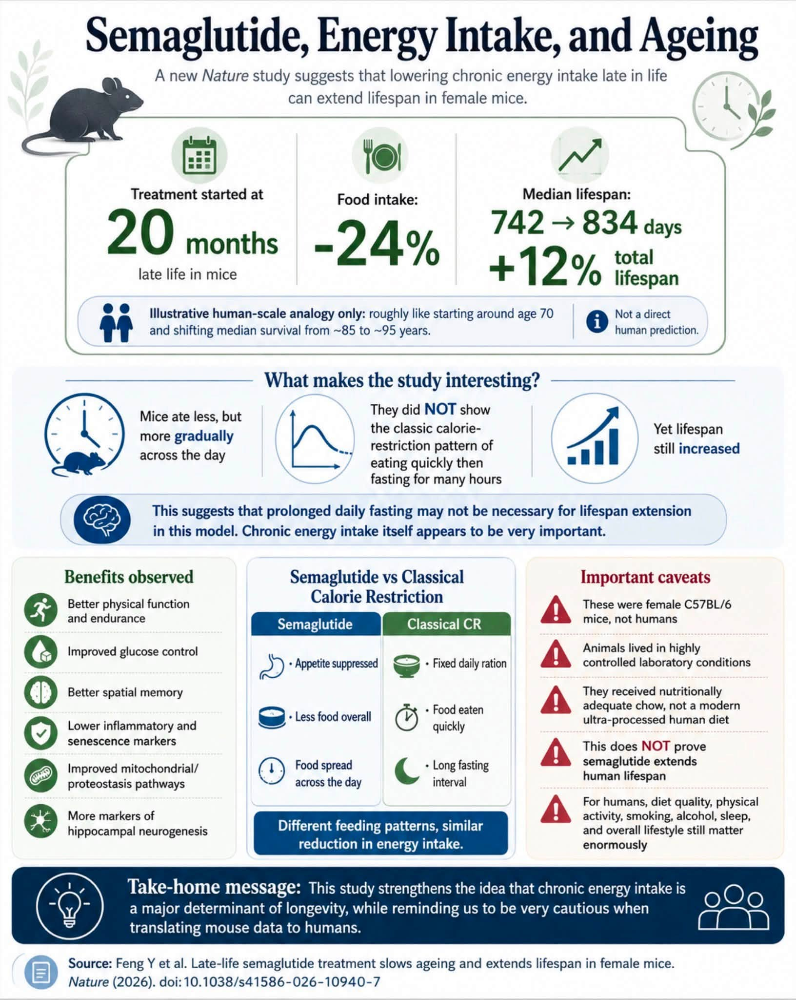

It is very well established in animals that calorie restriction slows aging. There is no surprise here.
#semaglutideHD #glp1HD #miceHD #calorierestrictionHD #agingHD #longevityHD
A shared Nature study report says elderly female mice on semaglutide lived 12% longer and improved on aging hallmarks, matching or beating caloric restriction on several measures. Louis notes calorie restriction slowing aging in animals is well established. The caveats: inbred female mice, possible muscle loss in older people, and no human data.
It is very well established in animals that calorie restriction slows aging. There is no surprise here.
#semaglutideHD #glp1HD #miceHD #calorierestrictionHD #agingHD #longevityHD
Ozempic already reduces cardiovascular disease, kidney disease, liver disease, and neurodegenerative conditions. Scientists have struggled to explain why a drug designed to control blood sugar and appetite produces benefits across so many unrelated systems.
A new study in Nature suggests one answer: it may be slowing aging itself.
Elderly female mice given semaglutide lived 12 percent longer than controls, regained their curiosity and memory, and showed improvement across virtually every hallmark of aging, including inflammation, senescent cells, DNA damage, and brain cell growth. When compared directly to caloric restriction, the drug matched or outperformed it on several measures, without the hunger or metabolic adaptation that makes dieting so hard to sustain.
The caveats are significant. These are inbred female mice. Rapid weight loss can reduce lean muscle in older people, raising real concerns about frailty. Whether these results hold in humans remains an open and genuinely important question.
But two researchers at the National Institute on Aging put the finding plainly: rather than explaining GLP-1's benefits one disease at a time, the results suggest they share a common cause. Slowed aging.
Read the full story, link in comments.

Louis shares Luigi Fontana's take on a Nature study in which semaglutide started at 20 months extended median mouse lifespan by 12% (742 to 834 days). Food intake fell about 24%, so much of the benefit probably reflects calorie restriction. The shared text cautions that it is not evidence of 10 extra years in humans.

A Nature study found elderly female mice given semaglutide lived 12 percent longer than controls, regained curiosity and memory, and improved across hallmarks of aging. Louis notes the main mechanism is almost certainly calorie restriction. Researchers suggest slowed aging could explain GLP-1's benefits across heart, kidney, liver and brain conditions.

Louis shares a summary stressing lean body mass includes liver and other tissues, and GLP-1 drugs preserved strength and function.
Louis highlights a FoundMyFitness note that in a 32-week semaglutide trial in adults with excess visceral fat, multiple epigenetic aging clocks showed improvement. The proposed mechanism is less adipose-driven inflammatory and metabolic signaling.

Eric Verdin's shared post says ARPA-H awarded $144 million to seven teams to lay groundwork for human aging trials, including a phase 3 in healthy adults in their 60s testing rapamycin, an SGLT2 inhibitor and semaglutide. The key gap is a validated aging biomarker regulators accept. Louis adds that age is the biggest CVD risk factor.

Louis reposts a mouse lifespan graph comparing IL-11 inhibition with other aging interventions. IL-11 is an inflammatory molecule produced in excess with age and linked to numerous diseases including heart disease.